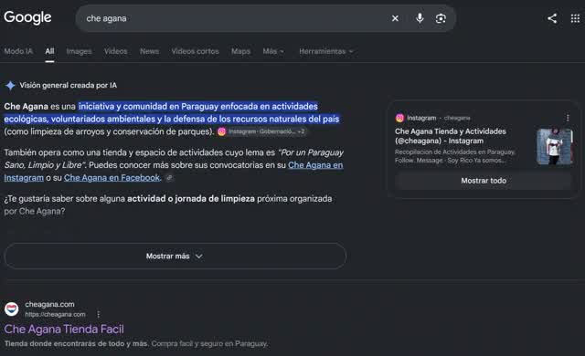

Ahora parece que la IA se chupa el agua, se come los bosques y que va a matar el planeta. Parte de eso es cierto, nos olvidamos quién hace el daño y cómo.
Si le echamos la culpa al que no es, el problema real sigue dañando al mundo.
Explicare mi Punto de Vista;
Un centro de datos es como una cuadra gigante lleno de computadoras prendidas todo el día. Necesita terreno, luz y agua
Fijate el patrón: cuando sale mal, siempre es una empresa privada que construye sin estudio ambiental. El problema es eso, más que las instalaciones.
Octubre de 2026, una autoridad de Finlandia mandó frenar las obras de dos centros de datos de Google. El problema es que en uno de los sitios ya se habían talado unas 300 hectáreas de bosque, o sea que tiraron el monte antes de hacer un estudio ambiental del daño ecologico que eso causaria… 300 Hectarias en este blog parece poco, solo son numeros… Pero ver lo que son 300 hectarias en persona ni alcanza la vista para ver.
además de talar, sacaron la capa de tierra, hicieron caminos y áreas de depósito, y modificaron zanjas.
Fuente: Al Jazeera · The Next Web
Una ambientalista local dijo que el área talada equivale a unas 420 canchas de fútbol, y que también talaron zonas naturales que debían preservarse.
Fuente: AFP vía Kuwait Times
Google reconoció que no estuvo a la altura de sus propios estándares y dice que va a replantar árboles en 130 hectáreas.
JAJAJA, hacer el daño y luego cuando te pillan decir "ups, no somos asi vamos a plantar arboles no nativos en otro lado… Hipocresia pura. "
Fuente: The Next Web
Aunque el gobierno finlandés priorizó atraer centros de datos porque el país tiene un desempleo récord y la economía anda floja. Cuando al Estado le urge la inversión, controlar pasa a segundo plano. Justo lo que hoy pasa en Paraguay, El presidente queriendo mejorar numeros de la cagada que esta haciendo, no le queda mas remedio que regalar el pais.
Fuente: AFP vía Kuwait Times
Ejemplo, tambien Google; convirtió una vieja fábrica de papel en centro de datos. Reutilizó la infraestructura que YA Existia, incluido un túnel por donde entraba agua de mar. Antes de armar el sistema de enfriamiento, el equipo revisó 30 años de registros de temperatura del mar y usó mucho modelado térmico. El agua usada se mezcla con agua nueva antes de volver al golfo, para que salga con una temperatura parecida a la que entró asi no dañar la fauna marina.
Fuente: DatacenterDynamics
Pero lo que vi son datos que publica la propia empresa privada Google, y no encontré auditoría independiente. (la importancia de fomentar la prensa libre y financiar la ciencia)
Google habla de un buen diseño, pero es solo un ejemplo ya que no se puede copiar en cualquier lado, porque necesita tener un mar al lado e infraestructura especifica ya hecha…
Acaso traen fuentes de trabajo?
(Seccion aun en progreso, algun dia lo completare cuadno tenga mas info, esto esta de recordatorio perdon 😅. Podes aportar tambien.)
Todos ya usamos un centro de datos Ecocida aunque no usemos IA
| Lo que usamos | Dónde Vive |
|---|---|
| WhatsApp (mensajes, fotos, llamadas) | Centros de datos |
| TikTok, Instagram, YouTube | Centros de datos |
| Netflix, Spotify | Centros de datos |
| Gmail, Drive, fotos respaldadas | Centros de datos |
| Google Maps | Centros de datos |
| La app de tu banco | Centros de datos |
| Juegos online, Zoom, Meet | Centros de datos |
Ejemplo doloroso; buscar en Google ya usa IA.

Sabias que si pones “-ai” al final de lo que buscas la IA se desactiva?
Pero incluso desactivando la IA, Google ya usa Centros de Datos inmensos con IA para procesar resultados. Lo mismo con YouTube, cad avideo una IA la revisa para generar subtitulos, otros idiomas etc. El hecho de usar YouTube ya es fomentar el uso de estos centro de datos ecocidas, y cada video nuevo requiere mas centros de datos para almacenar esos videos.
Hay buscadores e IAs que se venden como la versión “ecológica” de la IA. Los dos más conocidos son Ecosia (buscador con IA) y EcoGPT (una IA) que plantan árboles según cuánto lo uses. Suena lindo, y plantar árboles está bien, pero creer que eso arregla el daño de los centros de datos es estar disociado.
Qué hace cada uno:
Ecosia dice que planta en más de 35 países, con especies nativas, y que usa modelos de IA más chicos que gastan menos. También asegura que produce más energía limpia que la que consumen sus búsquedas y su IA.
La IA de Ecosia funciona con modelos de la empresa francesa Mistral, o sea que las consultas se envían a un proveedor externo que las procesa, no a servidores propios de Ecosia. Osea, es basicamente solo un greenwashing
Fuente: Ethical Consumer · Reseña de Ecosia AI
EcoGPT paga un árbol cada 200 mensajes en el plan gratis y cada 100 en el pago. Planta en Kenia, Tanzania y Uganda. Según sus propios términos, su infraestructura principal está en centros de datos de Google, ese mismo Google del primer ejemplo de ecocidio…
Fuente: ForkLog
El CO₂ es un problema global, pero el agua, la tierra, el ruido y la red eléctrica son problemas locales. Un árbol que EcoGPT o Ecosia planten en Uganda no le devuelve ni una gota de agua a un pueblo que vive al lado de un centro de datos; a ese pueblo no le importa un carajo dónde plantaste el árbol. Si los distintos tipos de impacto no se pueden compensar entre sí automáticamente, y plantar árboles en una región no compensa el efecto local sobre el agua en otra.
Fuente: ForkLog
Ejemplo Apple viniendo a plantar Arboles NO NATIVOS en Paraguay, como si fuese que eso compensa los niños esclavizados el congo… HIPOCRITAS.
Si… Pero son soluciones diferentes que sacrifican comodidad.
Ejemplo el centro de datos unificado, llamado comunmente computación distribuida
En lugar de construir nuevos centros de datos, podemos aprovechar la capacidad informática que ya existe en millones de computadoras alrededor del mundo. Mediante la computación distribuida voluntaria, esas PC pueden colaborar como una infraestructura informática compartida para que médicos y científicos realicen investigaciones, aprovechando recursos existentes en lugar de depender exclusivamente de nuevos equipos.
Pero esos son esfuerzos titanicos y complejos, podes ver mas info aca sobre uno de estos que encontre: Ir a Ver ↗️
Alternativas que hoy podemos usar nosotros;
Podes ver como funciona y ser parte de la comunidad descargando aMule ↗️ (para android hay uno con termux, un poco mas complejo de instalar)
Ejemplos Tecnicos;
Son incómodas, pero no podemos matar la vida solo por nuestra comodidad…
Aqui esta el Tema del Titulo, Podés correr una IA en tu propia computadora, sin internet y sin mandarle nada a nadie. No necesitamos hacer un Ecocidio para poder usar la IA.
Hare otro post explicando 😅
Descargas una sola vez y listo. No hay cuenta, no hay mensualidad y no necesitás conexión.
Aunque claro, tambien tiene problemas. Necesitas una PC potente, la potencia determina lo inteligente que sera la IA, la tecnologia y parametros.
ademas Fabricar hardware también contamina, por eso la idea es usar lo que ya tenes.
La IA no es un monstruo ni un milagro. Es una herramienta, y el daño sale de cómo se instala la infraestructura que la sostiene: sin estudios, sin transparencia y sin que nadie controle.
Necesitamos un Paraguay con regulaciones ambientales e instituciones que NO SEAN CORRUPTAS KARAJO
Y mientras tanto, informarnos y elegir mejor, incluyendo probar una IA en tu propia compu.
Si te interesa formar parte, unite al grupo asi un dia ser suficientes para presionar al gobierno a que le interese nuestro Paraguay. Por que Paraguay deberia ser para los Paraguayos, no para regalar a cualquier random.
El problema no es la inteligencia artificial (IA) en sí misma, sino cómo decidimos utilizarla, regularla y priorizarla como sociedad, considerando sus consecuencias sociales y ambientales 💝